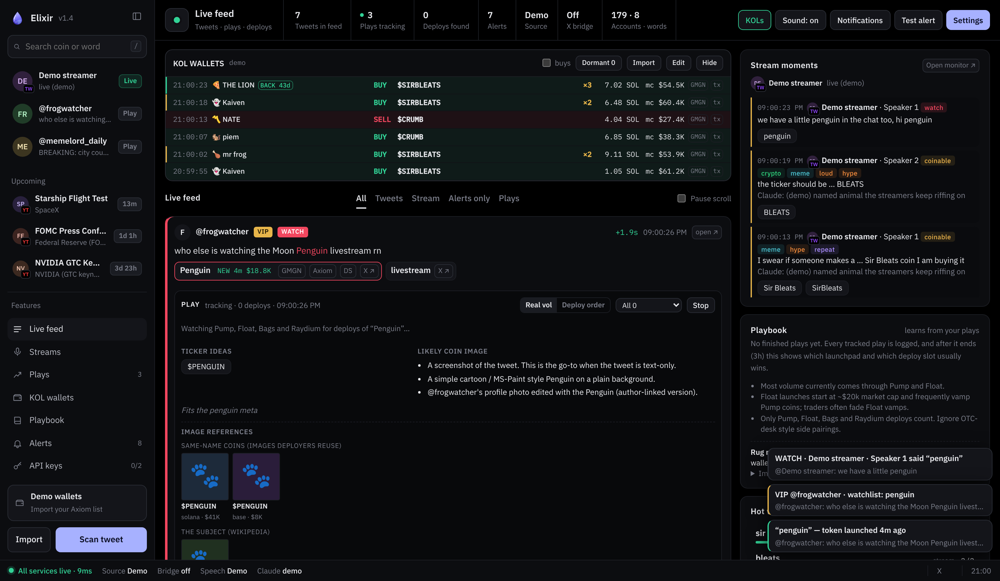
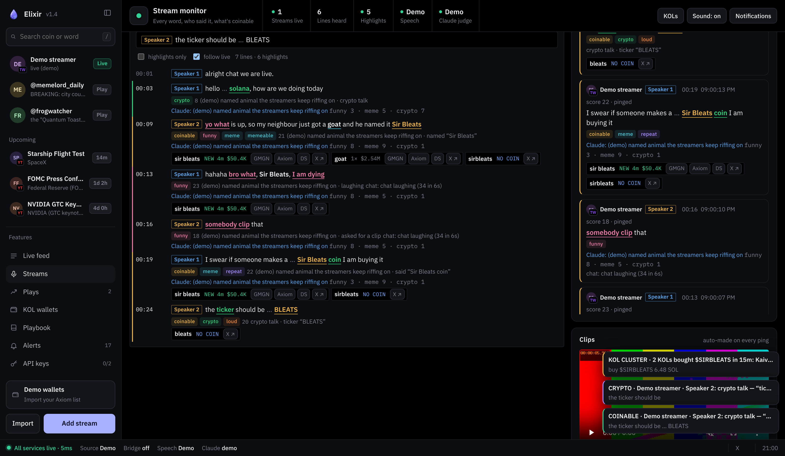

Elixir watches the tweets and live streams that move memecoins, and tells you the moment someone says something coin-able. It ranks the 1st, 2nd and 3rd deploys by real volume and flags rugs and bundles before you buy.


Built for Solana memecoin traders who trade on Axiom, GMGN and pump.fun.
179 hand-picked accounts, from Elon, Trump and CZ to Ansem, toly, breaking news and race calls. Coin-able words are pulled out and checked instantly.
Pump, Bags, Raydium and Float only. Fake volume is spotted, vamps are flagged, and you get pings at 20K, 50K and 100K market cap.
Live transcripts of Twitch, YouTube, X lives and Spaces, with speaker labels. Funny, crypto and coin-able moments get pinged and clipped automatically.
Bundled launches, dev sells and fake charts are flagged. Rugs are saved to memory, so the same dev's next coin gets flagged.
Import your Axiom wallet list. Swaps show about half a second after they land on-chain, and clusters ping you. Quiet wallets are hidden until they come back.
Fed press conferences, White House addresses, SpaceX, NVIDIA and more, with a countdown and a ping 15 minutes before.
No coding. Elixir installs its own tools and updates itself.
Get the LTS version from nodejs.org. You only do this once.
Download the ZIP and unzip it anywhere.
start.bat on Windows, start.command on Mac, bash start.sh on Linux. The page opens by itself.
Want to look around first? Use demo.bat / demo.command / bash start.sh demo for fake data.
Elixir works out of the box. Paste these in the app under API keys; they stay on your computer.
| Key | Unlocks | Cost |
|---|---|---|
| twitterapi.io | Tweets pulled automatically from all tracked accounts | Paid, cheap |
| Deepgram | Live transcription from stream links | Free credit |
| Helius | Fast KOL wallet tracking for big lists | Free |
| Anthropic | Claude judges funny/meme-worthy moments and suggests tickers and images | Pay per use |
| Telegram / Discord | Pings on your phone or in a channel | Free |